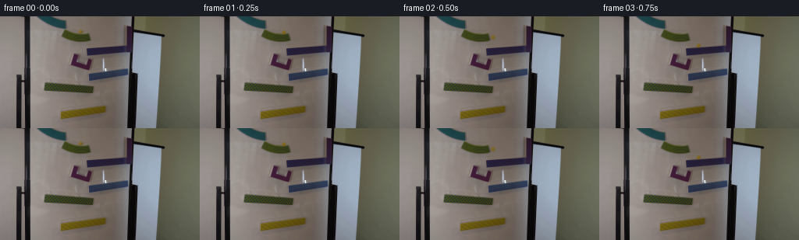

CODING AGENTS AS PIXEL WORLD MODELS
traex/GPT-6.1-Sol · 0103
点击播放 · 原生 RGB 像素
逐轮保存的候选
回放视频、检查图与代码变化。
每份候选均可单独播放。实际图片检查记录在下方工具轨迹中。
候选 01播放与检查图
点击播放 · 原生 RGB 像素

展开代码变化
--- 上一保存版本
+++ 本次保存版本
@@ -0,0 +1,172 @@
+from pathlib import Path
+import math
+import numpy as np
+import cv2
+from PIL import Image
+import artifact_io
+
+ROOT = Path(__file__).resolve().parent
+G = 1080.0
+ROLL = 5.0 / 7.0
+
+
+def make_motion():
+ """Projected gravity and rolling energy on the existing board's channels."""
+ segments = []
+ clock = 0.0
+
+ def ramp(x, y, vx, slope, end_x, label):
+ nonlocal clock
+ acc = ROLL * G * slope / (1 + slope * slope)
+ distance = end_x - x
+ d = math.sqrt(vx * vx + 2 * acc * distance)
+ roots = [(-vx + d) / acc, (-vx - d) / acc]
+ duration = min(z for z in roots if z > 1e-8)
+ segments.append((clock, clock + duration, 'ramp', (x, y, vx, acc, slope), label))
+ clock += duration
+ velocity = vx + acc * duration
+ return end_x, y + slope * distance, velocity, slope * velocity
+
+ def drop(x, y, vx, vy, slope, intercept, retention, label):
+ nonlocal clock
+ offset = y - slope * x - intercept
+ speed = vy - slope * vx
+ duration = (-speed + math.sqrt(speed * speed - 2 * G * offset)) / G
+ segments.append((clock, clock + duration, 'flight', (x, y, vx, vy), label))
+ clock += duration
+ x += vx * duration
+ y += vy * duration + 0.5 * G * duration * duration
+ vy += G * duration
+ # The normal impact is dissipated; the tangential component is conserved,
+ # with losses to glass rolling, channel contact, and the small catches.
+ velocity = (vx + slope * vy) / (1 + slope * slope) * retention
+ return x, y, velocity, slope * velocity
+
+ x, y, vx, vy = ramp(103.05, 19.45, 0, .18, 114.5, 'green top')
+ x, y, vx, vy = drop(x, y, vx, vy, -.075, 38.3 + .075 * 113, .58, 'first catch')
+ x, y, vx, vy = ramp(x, y, vx, -.075, 112.5, 'blue top')
+ x, y, vx, vy = drop(x, y, vx, vy, .33, 57.8 - .33 * 103, .8, 'purple catch')
+ x, y, vx, vy = ramp(x, y, vx, .33, 110.3, 'purple base')
+ # The short curved right wall redirects the marble toward the next ramp.
+ duration = .145
+ segments.append((clock, clock + duration, 'curve',
+ (x, y, 115.2, 58.4, vx, vy, 32., -18.), 'purple lip'))
+ clock += duration
+ x, y, vx, vy = 115.2, 58.4, 32., -18.
+ x, y, vx, vy = drop(x, y, vx, vy, -.14, 71.1 + .14 * 115, .60, 'second blue catch')
+ x, y, vx, vy = ramp(x, y, vx, -.14, 114., 'blue middle')
+ x, y, vx, vy = drop(x, y, vx, vy, .083, 83.0 - .083 * 60, .40, 'green catch')
+ x, y, vx, vy = ramp(x, y, vx, .083, 119., 'green lower')
+ x, y, vx, vy = drop(x, y, vx, vy, -.135, 120.1 + .135 * 78, .62, 'yellow catch')
+ x, y, vx, vy = ramp(x, y, vx, -.135, 77.7, 'yellow bottom')
+ segments.append((clock, clock + 2, 'flight', (x, y, vx, vy), 'exit'))
+ return segments
+
+
+def evaluate(segments, time):
+ time = max(0., time)
+ for start, end, kind, values, label in segments:
+ if time <= end:
+ dt = time - start
+ if kind == 'ramp':
+ x, y, vx, acc, m = values
+ dx = vx * dt + .5 * acc * dt * dt
+ return x + dx, y + m * dx, vx + acc * dt, m * (vx + acc * dt), kind
+ if kind == 'flight':
+ x, y, vx, vy = values
+ return x + vx * dt, y + vy * dt + .5 * G * dt * dt, vx, vy + G * dt, kind
+ x0, y0, x1, y1, vx0, vy0, vx1, vy1 = values
+ duration = end - start
+ u = dt / duration
+ h00, h10 = 2*u**3-3*u*u+1, u**3-2*u*u+u
+ h01, h11 = -2*u**3+3*u*u, u**3-u*u
+ xx = h00*x0 + h10*duration*vx0 + h01*x1 + h11*duration*vx1
+ yy = h00*y0 + h10*duration*vy0 + h01*y1 + h11*duration*vy1
+ dx = ((6*u*u-6*u)*x0 + (3*u*u-4*u+1)*duration*vx0 + (-6*u*u+6*u)*x1 + (3*u*u-2*u)*duration*vx1)/duration
+ dy = ((6*u*u-6*u)*y0 + (3*u*u-4*u+1)*duration*vy0 + (-6*u*u+6*u)*y1 + (3*u*u-2*u)*duration*vy1)/duration
+ return xx, yy, dx, dy, kind
+ return -20., 180., 0., 0., 'flight'
+
+
+def remove_marble(source):
+ # Recover only the initial amber marble's tiny footprint, leaving the
+ # board, recessed ramp lip, magnets, and all original shadows untouched.
+ bg = source.copy()
+ for y in range(17, 22):
+ left = source[y, 97].astype(float)
+ right = source[y, 109].astype(float)
+ for x in range(99, 108):
+ t = (x - 97) / 12.
+ bg[y, x] = np.rint((1-t)*left + t*right).astype(np.uint8)
+ return bg
+
+
+def render_marble(background, x, y, phase, state):
+ """Small amber glass sphere, pixel-integrated with the source's soft optics."""
+ scale = 8
+ xa, xb = max(0, int(x)-8), min(256, int(x)+10)
+ ya, yb = max(0, int(y)-8), min(144, int(y)+10)
+ out = background.astype(np.float32).copy()
+ if xa >= xb or ya >= yb:
+ return out
+ width, height = xb-xa, yb-ya
+ sub = cv2.resize(out[ya:yb, xa:xb], (width*scale, height*scale), interpolation=cv2.INTER_LINEAR)
+ yy, xx = np.mgrid[0:height*scale, 0:width*scale].astype(np.float32)
+ xx = xa + (xx+.5)/scale - .5
+ yy = ya + (yy+.5)/scale - .5
+ u, v = (xx-x)/2.48, (yy-y)/2.48
+ rr = u*u + v*v
+ inside = rr <= 1
+ zz = np.sqrt(np.maximum(0, 1-rr))
+
+ # Most of the amber sphere is transmitted warm light, with a subdued
+ # upper-left reflection consistent with the original dim room exposure.
+ light = np.clip(.45 + .35*zz - .13*u - .13*v, .28, 1.)
+ material = np.stack((100 + 33*light, 79 + 28*light, 23 + 11*light), axis=-1)
+ transmitted = sub * np.array([1.03, .91, .27], dtype=np.float32)
+ col = .82*material + .18*transmitted
+ spec = np.exp(-((u+.33)**2/.085 + (v+.51)**2/.07))
+ col += spec[...,None] * np.array([12., 12., 10.])
+ # Extremely slight rotating internal amber reflection, not an opaque stripe.
+ vein = np.exp(-((u*np.cos(phase)+v*np.sin(phase)-.17)**2)/.035)*inside
+ col += vein[...,None]*np.array([1.2, .45, -1.1])
+ alpha = inside.astype(np.float32)
+ premult = col * alpha[...,None]
+ sigma = .47 * scale
+ alpha = cv2.GaussianBlur(alpha, (0,0), sigma)
+ premult = cv2.GaussianBlur(premult, (0,0), sigma)
+
+ # A faint compact cast shadow, fixed light direction, never a motion trail.
+ shadow = .055*np.exp(-((xx-x-.45)**2/6.0+(yy-y-2.0)**2/1.6))
+ sub *= (1-shadow[...,None])
+ sub = sub*(1-alpha[...,None]) + premult
+ out[ya:yb, xa:xb] = cv2.resize(sub, (width,height), interpolation=cv2.INTER_AREA)
+ return out
+
+
+def main():
+ original = np.asarray(Image.open(ROOT/'first_frame.png').convert('RGB'))
+ assert original.shape == (144,256,3)
+ background = remove_marble(original)
+ segments = make_motion()
+ frames = [original.copy()]
+ positions = []
+ for i in range(1,20):
+ time = i/4.
+ # A short camera exposure integrates the physical trajectory; the
+ # locked camera and background remain exactly stationary.
+ total = np.zeros_like(background, dtype=np.float32)
+ for dt in np.linspace(-.008, .008, 5):
+ x,y,vx,vy,state = evaluate(segments,time+dt)
+ total += render_marble(background, x,y,time*9.1,state)/5.
+ frame = np.rint(np.clip(total,0,255)).astype(np.uint8)
+ frames.append(frame)
+ positions.append((i,*evaluate(segments,time)[:2]))
+ frames = np.stack(frames)
+ np.save(ROOT/'.tmp'/'candidate_rgb.npy', frames)
+ (ROOT/'.tmp'/'positions.txt').write_text('\n'.join(str(p) for p in positions))
+ artifact_io.save(frames, ROOT)
+
+
+if __name__ == '__main__':
+ main()
候选 02播放与检查图
点击播放 · 原生 RGB 像素

展开代码变化
--- 上一保存版本
+++ 本次保存版本
@@ -138,9 +138,10 @@
# A faint compact cast shadow, fixed light direction, never a motion trail.
shadow = .055*np.exp(-((xx-x-.45)**2/6.0+(yy-y-2.0)**2/1.6))
- sub *= (1-shadow[...,None])
- sub = sub*(1-alpha[...,None]) + premult
- out[ya:yb, xa:xb] = cv2.resize(sub, (width,height), interpolation=cv2.INTER_AREA)
+ delta = sub*((1-shadow[...,None])*(1-alpha[...,None])-1) + premult
+ # Integrate only the object's change, not the stationary plate: resampling
+ # the plate itself would slightly soften an otherwise static rectangle.
+ out[ya:yb, xa:xb] += cv2.resize(delta, (width,height), interpolation=cv2.INTER_AREA)
return out
候选 03播放与检查图
可观测工具轨迹
实际执行的命令与返回图片。
命令 1exit 0
/bin/bash -lc 'ls -la && cat prompt.txt && cat GENERATION_RULES.md'
命令 2exit 0
/bin/bash -lc "cat artifact_io.py && python - <<'PY'
from PIL import Image
from collections import Counter
import numpy as np
im=np.array(Image.open('first_frame.png').convert('RGB'));print(im.shape);print(Counter(map(tuple,im.reshape(-1,3))).most_common(20))
# Color codes grid 128x72
im=np.array(Image.fromarray(im).resize((128,72)))
for y in range(72):
s=''
for r,g,b in im[y].astype(int):
if max(r,g,b)-min(r,g,b)<20:
s+= ' ' if r>235 else '.' if r>180 else ':' if r>100 else '*' if r>40 else '#'
elif r>150 and g>130 and b<130:s+='Y'
elif r>g*1.35 and r>b*1.25:s+='R'
elif b>r*1.2 and b>g*1.15:s+='B'
elif g>r*1.15 and g>b*1.1:s+='G'
else:s+='o'
print(f'{y*2:03d} '+s)
PY"命令 3exit 0
/bin/bash -lc "python - <<'PY'
from PIL import Image
import numpy as np,cv2
im=np.array(Image.open('first_frame.png').convert('RGB'))
hsv=cv2.cvtColor(im,cv2.COLOR_RGB2HSV)
for name,mask in [('yellow',((hsv[:,:,0]>17)&(hsv[:,:,0]<38)&(hsv[:,:,1]>50))),('green',((hsv[:,:,0]>=38)&(hsv[:,:,0]<90)&(hsv[:,:,1]>50))),('red',((hsv[:,:,0]<15)&(hsv[:,:,1]>90))),('blue',((hsv[:,:,0]>90)&(hsv[:,:,0]<130)&(hsv[:,:,1]>90)))]:
n,lab,st,cent=cv2.connectedComponentsWithStats(mask.astype('uint8'))
print(name,[(s.tolist(),c.tolist()) for s,c in zip(st[1:],cent[1:]) if s[4]>3]); ys,xs=np.where(mask);print('max sat',[(int(x),int(y),im[y,x].tolist()) for x,y in zip(xs[::max(1,len(xs)//25)],ys[::max(1,len(ys)//25)])])
# ascii region top, one pixel per char
for y in range(0,38):
s=''
for x in range(43,130):
r,g,b=im[y,x].astype(int);h,S,v=hsv[y,x]
if S>65:
s+='R' if h<15 or h>170 else 'y' if h<35 else 'G' if h<88 else 'B' if h<130 else 'M'
else:s+= ' ' if v>180 else '.' if v>150 else ':' if v>110 else '*' if v>60 else '#'
print(f'{y:02d} '+s)
PY"命令 4exit 0
/bin/bash -lc "python - <<'PY'
from PIL import Image
import numpy as np
im=np.array(Image.open('first_frame.png'))
print('marble RGB grid x98-111 y14-25')
for y in range(14,26):
print(y,' '.join(f'{r:03},{g:03},{b:03}' for r,g,b in im[y,98:112,:3]))
print('Full image object-class ascii 1x1 central')
for y in range(14,134):
s=''
for x in range(53,174):
r,g,b=im[y,x,:3].astype(float)
if max(r,g,b)<38:s+='#'
elif max(r,g,b)-min(r,g,b)<16:s+= ' ' if r>135 else '.' if r>90 else ':'
elif r>g+10 and r>b+20:s+='R'
elif g>r+5 and g>b+12:s+='G'
elif r>b+25 and g>b+25:s+='y'
elif b>r+12 and b>g+6:s+='B'
elif b>r+10:s+='b'
else:s+='o'
print(f'{y:03} {s}')
PY"命令 5exit 0
/bin/bash -lc "python - <<'PY'
import numpy as np,cv2
from PIL import Image
im=np.array(Image.open('first_frame.png').convert('RGB'));r,g,b=im.astype(int).transpose(2,0,1)
mask=(r-g>18)&(r-b>24)&(g-b<27)
n,lab,s,c=cv2.connectedComponentsWithStats(mask.astype('uint8'))
print([(a.tolist(),b.tolist()) for a,b in zip(s[1:],c[1:]) if a[4]>5]);
# Print whole true RGB as quantized hex color index at central ramps
pal=np.array([[115,105,95],[65,75,28],[50,60,26],[65,78,41],[55,66,70],[30,55,73],[35,32,55],[118,65,61],[115,81,73],[83,57,43],[85,81,72],[45,45,38],[130,108,35],[102,85,24],[10,10,10]])
chars=' ggGbbcRrs.:YM#'
for y in range(12,102):
st=''
for x in range(76,166):
col=im[y,x];i=np.argmin(np.sum((pal-col)**2,axis=1));st+=chars[i]
print('%03d '%y+st)
print('red region examples:')
for y in [48,50,52,54,56,58,60,62,64,66,68]:
print(y,[(x,im[y,x].tolist()) for x in range(88,122,3)])
PY"命令 6exit 0
/bin/bash -lc "python - <<'PY'
import numpy as np
from PIL import Image
im=np.array(Image.open('first_frame.png').convert('RGB')).astype(int)
regions=[('green upper',(76,14,123,35),'g'),('blue upper',(107,32,165,52),'b'),('red',(86,46,121,70),'r'),('blue lower',(109,63,166,85),'b'),('green lower',(53,80,123,103),'g'),('yellow',(72,112,139,136),'y')]
for n,(x0,y0,x1,y1),col in regions:
print(n)
crop=im[y0:y1,x0:x1];r,g,b=crop.transpose(2,0,1)
mask={'g':(g>b+17)&(g>r-6)&(r<100),'b':(b>r+7)&(b>g+5)&(r<70),'r':(r>g+16)&(b>g+12)&(g<65),'y':(r>b+35)&(g>b+25)&(r>70)&(g>65)}[col]
for x in range(x0,x1):
yy=np.flatnonzero(mask[:,x-x0])+y0
if len(yy)>1:print(x,yy.min(),yy.max(),end='; ')
print('\\n')
PY"命令 7exit 0
/bin/bash -lc "python - <<'PY'
import numpy as np
from PIL import Image
im=np.array(Image.open('first_frame.png'))
for y in [16,17,18,19,20,21,22,23]:
print('Y=',y)
for x in range(95,113):print(x,im[y,x,:3].tolist(),end='; ')
print()
PY"命令 8exit 0
/bin/bash -lc "mkdir -p .tmp && cat > .tmp/test_motion.py <<'PY'
import math
G=900.0;K=5/7
segments=[]
t=0
def ramp(x,y,vx,m,xend,label,damp=1):
global t
a=K*G*m/(1+m*m)
d=xend-x
disc=vx*vx+2*a*d
if disc<0: raise Exception('cant reach '+label)
roots=[(-vx+math.sqrt(disc))/a,(-vx-math.sqrt(disc))/a] if a else [d/vx]
dur=min(q for q in roots if q>1e-6)
segments.append((t,t+dur,label,'ramp',(x,y,vx,a,m)))
t+=dur
v=vx+a*dur
return xend,y+m*d,v,m*v
def flight(x,y,vx,vy,m,b,label,damp=.6):
global t
# support y=m*x+b.
c=y-m*x-b;dv=vy-m*vx
dt=(-dv+math.sqrt(dv*dv-2*G*c))/G
segments.append((t,t+dt,label,'flight',(x,y,vx,vy)))
t+=dt
xx=x+vx*dt;yy=y+vy*dt+.5*G*dt*dt
vy+=G*dt
v=(vx+m*vy)/(1+m*m)*damp
return xx,yy,v,m*v
x,y,vx,vy=ramp(103.05,19.45,18,.18,114.5,'upper green')
x,y,vx,vy=flight(x,y,vx,vy,-.075,38.3+.075*113,'drop to blue',.58)
x,y,vx,vy=ramp(x,y,vx,-.075,112.5,'upper blue')
x,y,vx,vy=flight(x,y,vx,vy,.33,57.8-.33*103,'drop to red',.8)
print('red landing',t,x,y,vx,vy)
# Red angled inner floor to a curved ramp lip, launch directed by channel.
x,y,vx,vy=ramp(x,y,vx,.33,110.3,'red floor')
# red curved lip Hermite spline (explicit smooth changing tangent)
x0,y0=x,y;dur=.155
segments.append((t,t+dur,'red curved lip','curve',(x0,y0,114.6,53.4,vx,vy,38.,-39.)))
t+=dur;x,y,vx,vy=114.6,53.4,38.,-39.
x,y,vx,vy=flight(x,y,vx,vy,-.14,71.1+.14*115,'drop to lower blue',.60)
x,y,vx,vy=ramp(x,y,vx,-.14,114.,'lower blue')
x,y,vx,vy=flight(x,y,vx,vy,.065,83.1-.065*60,'drop to lower green',.40)
print('green landing',t,x,y,vx,vy)
x,y,vx,vy=ramp(x,y,vx,.065,119.,'lower green')
x,y,vx,vy=flight(x,y,vx,vy,-.135,120.1+.135*78,'drop to yellow',.62)
print('yellow landing',t,x,y,vx,vy)
x,y,vx,vy=ramp(x,y,vx,-.135,77.7,'yellow bottom')
segments.append((t,t+2,'exit','flight',(x,y,vx,vy)))
for z in segments:print(z)
PY
python .tmp/test_motion.py"命令 9exit 0
/bin/bash -lc "cp .tmp/test_motion.py .tmp/test_motion2.py && python - <<'PY'
p='.tmp/test_motion2.py'
s=open(p).read().replace('19.45,18,.18','19.45,0,.18').replace('dur=.155','dur=.145').replace('114.6,53.4,vx,vy,38.,-39.','115.2,58.4,vx,vy,32.,-18.').replace('114.6,53.4,38.,-39.','115.2,58.4,32.,-18.')
open(p,'w').write(s)
PY
python .tmp/test_motion2.py"命令 10exit 0
/bin/bash -lc "python - <<'PY'
import numpy as np,cv2
from PIL import Image
im=np.array(Image.open('first_frame.png').convert('RGB'))
y,x=np.mgrid[:144,:256];mask=((x-102.8)**2/4.1**2+(y-19.4)**2/3.0**2<1).astype('uint8')*255
for method in [cv2.INPAINT_TELEA,cv2.INPAINT_NS]:
bg=cv2.inpaint(im,mask,3,method)
print('method',method)
for yy in range(16,24): print(yy,bg[yy,98:110].tolist())
Image.fromarray(bg).save('.tmp/bg%d.png'%method)
PY"命令 11exit 0
/bin/bash -lc "python - <<'PY'
s=open('.tmp/test_motion2.py').read().replace('.065,83.1-.065*60','.083,83.0-.083*60').replace('vx,.065,119.','vx,.083,119.').replace('G=900.0','G=1080.0')
open('.tmp/test_motion3.py','w').write(s)
PY
python .tmp/test_motion3.py"命令 12exit 0
/bin/bash -lc "cat > generate.py <<'PY'
from pathlib import Path
import math
import numpy as np
import cv2
from PIL import Image
import artifact_io
ROOT = Path(__file__).resolve().parent
G = 1080.0
ROLL = 5.0 / 7.0
def make_motion():
\"\"\"Projected gravity and rolling energy on the existing board's channels.\"\"\"
segments = []
clock = 0.0
def ramp(x, y, vx, slope, end_x, label):
nonlocal clock
acc = ROLL * G * slope / (1 + slope * slope)
distance = end_x - x
d = math.sqrt(vx * vx + 2 * acc * distance)
roots = [(-vx + d) / acc, (-vx - d) / acc]
duration = min(z for z in roots if z > 1e-8)
segments.append((clock, clock + duration, 'ramp', (x, y, vx, acc, slope), label))
clock += duration
velocity = vx + acc * duration
return end_x, y + slope * distance, velocity, slope * velocity
def drop(x, y, vx, vy, slope, intercept, retention, label):
nonlocal clock
offset = y - slope * x - intercept
speed = vy - slope * vx
duration = (-speed + math.sqrt(speed * speed - 2 * G * offset)) / G
segments.append((clock, clock + duration, 'flight', (x, y, vx, vy), label))
clock += duration
x += vx * duration
y += vy * duration + 0.5 * G * duration * duration
vy += G * duration
# The normal impact is dissipated; the tangential component is conserved,
# with losses to glass rolling, channel contact, and the small catches.
velocity = (vx + slope * vy) / (1 + slope * slope) * retention
return x, y, velocity, slope * velocity
x, y, vx, vy = ramp(103.05, 19.45, 0, .18, 114.5, 'green top')
x, y, vx, vy = drop(x, y, vx, vy, -.075, 38.3 + .075 * 113, .58, 'first catch')
x, y, vx, vy = ramp(x, y, vx, -.075, 112.5, 'blue top')
x, y, vx, vy = drop(x, y, vx, vy, .33, 57.8 - .33 * 103, .8, 'purple catch')
x, y, vx, vy = ramp(x, y, vx, .33, 110.3, 'purple base')
# The short curved right wall redirects the marble toward the next ramp.
duration = .145
segments.append((clock, clock + duration, 'curve',
(x, y, 115.2, 58.4, vx, vy, 32., -18.), 'purple lip'))
clock += duration
x, y, vx, vy = 115.2, 58.4, 32., -18.
x, y, vx, vy = drop(x, y, vx, vy, -.14, 71.1 + .14 * 115, .60, 'second blue catch')
x, y, vx, vy = ramp(x, y, vx, -.14, 114., 'blue middle')
x, y, vx, vy = drop(x, y, vx, vy, .083, 83.0 - .083 * 60, .40, 'green catch')
x, y, vx, vy = ramp(x, y, vx, .083, 119., 'green lower')
x, y, vx, vy = drop(x, y, vx, vy, -.135, 120.1 + .135 * 78, .62, 'yellow catch')
x, y, vx, vy = ramp(x, y, vx, -.135, 77.7, 'yellow bottom')
segments.append((clock, clock + 2, 'flight', (x, y, vx, vy), 'exit'))
return segments
def evaluate(segments, time):
time = max(0., time)
for start, end, kind, values, label in segments:
if time <= end:
dt = time - start
if kind == 'ramp':
x, y, vx, acc, m = values
dx = vx * dt + .5 * acc * dt * dt
return x + dx, y + m * dx, vx + acc * dt, m * (vx + acc * dt), kind
if kind == 'flight':
x, y, vx, vy = values
return x + vx * dt, y + vy * dt + .5 * G * dt * dt, vx, vy + G * dt, kind
x0, y0, x1, y1, vx0, vy0, vx1, vy1 = values
duration = end - start
u = dt / duration
h00, h10 = 2*u**3-3*u*u+1, u**3-2*u*u+u
h01, h11 = -2*u**3+3*u*u, u**3-u*u
xx = h00*x0 + h10*duration*vx0 + h01*x1 + h11*duration*vx1
yy = h00*y0 + h10*duration*vy0 + h01*y1 + h11*duration*vy1
dx = ((6*u*u-6*u)*x0 + (3*u*u-4*u+1)*duration*vx0 + (-6*u*u+6*u)*x1 + (3*u*u-2*u)*duration*vx1)/duration
dy = ((6*u*u-6*u)*y0 + (3*u*u-4*u+1)*duration*vy0 + (-6*u*u+6*u)*y1 + (3*u*u-2*u)*duration*vy1)/duration
return xx, yy, dx, dy, kind
return -20., 180., 0., 0., 'flight'
def remove_marble(source):
# Recover only the initial amber marble's tiny footprint, leaving the
# board, recessed ramp lip, magnets, and all original shadows untouched.
bg = source.copy()
for y in range(17, 22):
left = source[y, 97].astype(float)
right = source[y, 109].astype(float)
for x in range(99, 108):
t = (x - 97) / 12.
bg[y, x] = np.rint((1-t)*left + t*right).astype(np.uint8)
return bg
def render_marble(background, x, y, phase, state):
\"\"\"Small amber glass sphere, pixel-integrated with the source's soft optics.\"\"\"
scale = 8
xa, xb = max(0, int(x)-8), min(256, int(x)+10)
ya, yb = max(0, int(y)-8), min(144, int(y)+10)
out = background.astype(np.float32).copy()
if xa >= xb or ya >= yb:
return out
width, height = xb-xa, yb-ya
sub = cv2.resize(out[ya:yb, xa:xb], (width*scale, height*scale), interpolation=cv2.INTER_LINEAR)
yy, xx = np.mgrid[0:height*scale, 0:width*scale].astype(np.float32)
xx = xa + (xx+.5)/scale - .5
yy = ya + (yy+.5)/scale - .5
u, v = (xx-x)/2.48, (yy-y)/2.48
rr = u*u + v*v
inside = rr <= 1
zz = np.sqrt(np.maximum(0, 1-rr))
# Most of the amber sphere is transmitted warm light, with a subdued
# upper-left reflection consistent with the original dim room exposure.
light = np.clip(.45 + .35*zz - .13*u - .13*v, .28, 1.)
material = np.stack((100 + 33*light, 79 + 28*light, 23 + 11*light), axis=-1)
transmitted = sub * np.array([1.03, .91, .27], dtype=np.float32)
col = .82*material + .18*transmitted
spec = np.exp(-((u+.33)**2/.085 + (v+.51)**2/.07))
col += spec[...,None] * np.array([12., 12., 10.])
# Extremely slight rotating internal amber reflection, not an opaque stripe.
vein = np.exp(-((u*np.cos(phase)+v*np.sin(phase)-.17)**2)/.035)*inside
col += vein[...,None]*np.array([1.2, .45, -1.1])
alpha = inside.astype(np.float32)
premult = col * alpha[...,None]
sigma = .47 * scale
alpha = cv2.GaussianBlur(alpha, (0,0), sigma)
premult = cv2.GaussianBlur(premult, (0,0), sigma)
# A faint compact cast shadow, fixed light direction, never a motion trail.
shadow = .055*np.exp(-((xx-x-.45)**2/6.0+(yy-y-2.0)**2/1.6))
sub *= (1-shadow[...,None])
sub = sub*(1-alpha[...,None]) + premult
out[ya:yb, xa:xb] = cv2.resize(sub, (width,height), interpolation=cv2.INTER_AREA)
return out
def main():
original = np.asarray(Image.open(ROOT/'first_frame.png').convert('RGB'))
assert original.shape == (144,256,3)
background = remove_marble(original)
segments = make_motion()
frames = [original.copy()]
positions = []
for i in range(1,20):
time = i/4.
# A short camera exposure integrates the physical trajectory; the
# locked camera and background remain exactly stationary.
total = np.zeros_like(background, dtype=np.float32)
for dt in np.linspace(-.008, .008, 5):
x,y,vx,vy,state = evaluate(segments,time+dt)
total += render_marble(background, x,y,time*9.1,state)/5.
frame = np.rint(np.clip(total,0,255)).astype(np.uint8)
frames.append(frame)
positions.append((i,*evaluate(segments,time)[:2]))
frames = np.stack(frames)
np.save(ROOT/'.tmp'/'candidate_rgb.npy', frames)
(ROOT/'.tmp'/'positions.txt').write_text('\\n'.join(str(p) for p in positions))
artifact_io.save(frames, ROOT)
if __name__ == '__main__':
main()
PY
python generate.py
python - <<'PY'
from PIL import Image
import numpy as np
f=np.load('.tmp/candidate_rgb.npy')
a=np.array(Image.open('first_frame.png').convert('RGB'))
print('shape',f.shape,'dtype',f.dtype,'frame0 identical',np.array_equal(f[0],a))
print(open('.tmp/positions.txt').read())
for i in range(20):
d=np.any(f[i]"'!=a,axis=2); print(i,'"'changed pixels',d.sum())
PY"命令 13exit 0
/bin/bash -lc "python generate.py && python - <<'PY'
import numpy as np
from PIL import Image
frames=np.load('.tmp/candidate_rgb.npy');im=np.array(Image.open('first_frame.png').convert('RGB'))
print('pixel-identical first frame:',np.array_equal(frames[0],im))
print('Number of altered pixels:',[np.any(f"'!=im,axis=2).sum().item() for f in frames])
for i,x,y in [(0,103,19),(1,107,20),(3,127,37),(8,106,59),(12,108,87),(18,114,115)]:
print(i,frames[i,y-1:y+2,x-1:x+2].tolist())
packed=np.load('"'pixels.npz')['pixels'];print('Saved packed:',packed.shape)
PY"保存候选 3 份；完成命令 13 次；可验证图片返回 0 张。原始 API 响应与完整日志保留在本地。